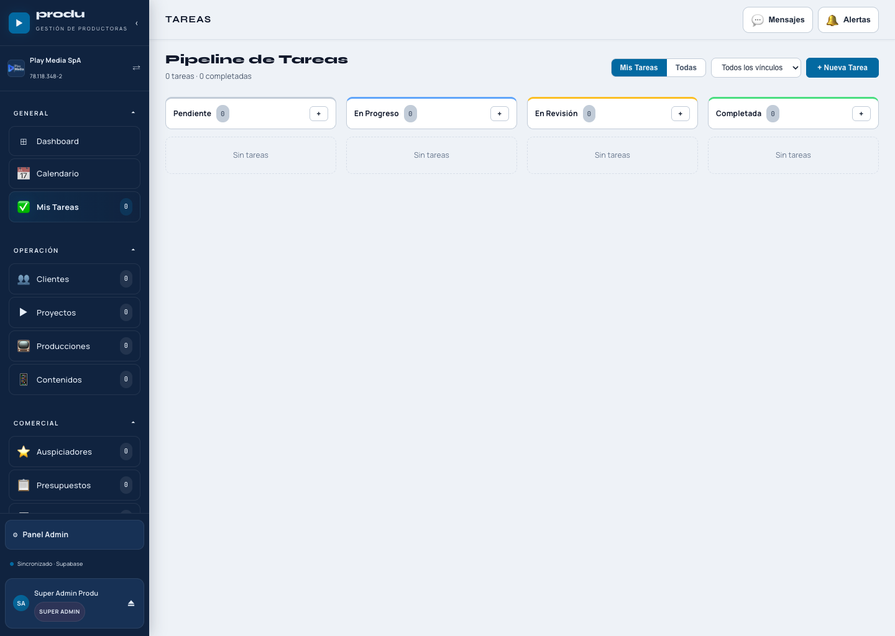
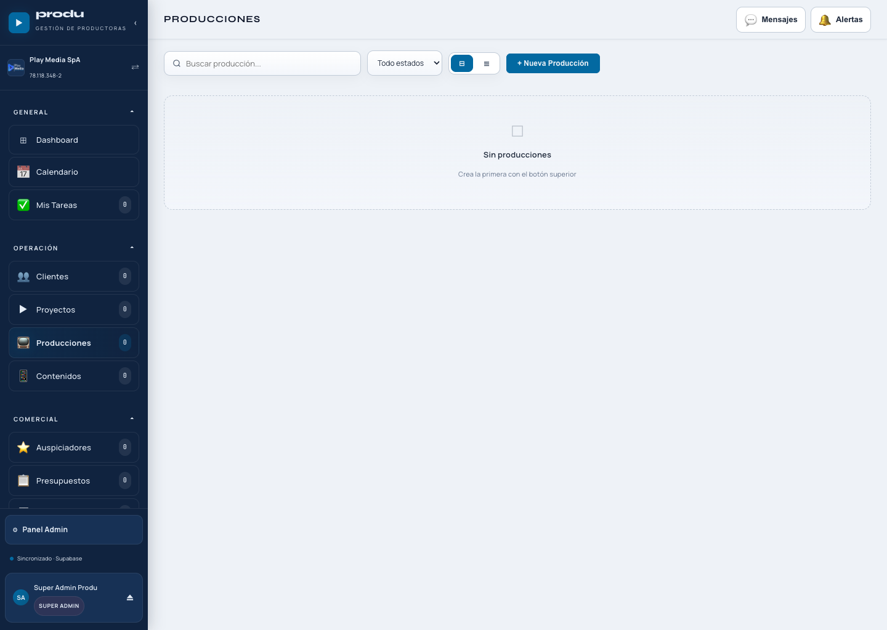
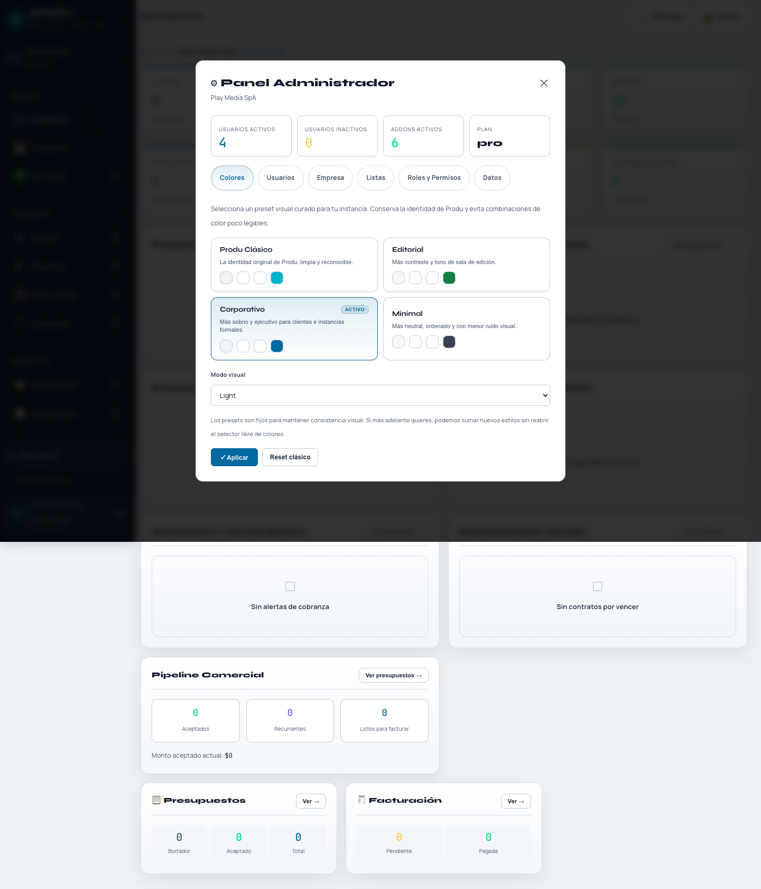
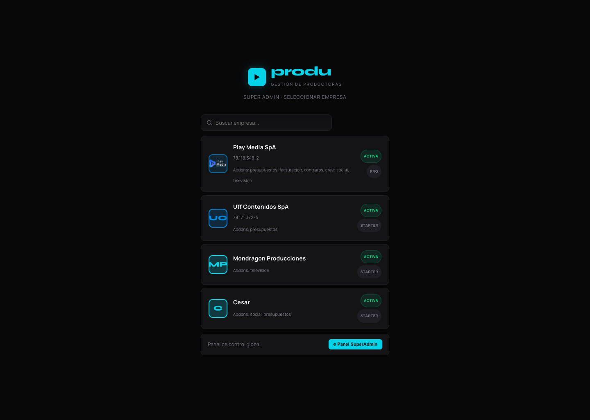

1. Visión General
Produ es un software modular para gestionar operación, contenido, clientes, flujo comercial y control administrativo de productoras y equipos creativos.
Objetivo del sistema
- Centralizar proyectos, producciones, campañas y tareas.
- Ordenar la relación entre operación, calendario y comercial.
- Controlar presupuestos, facturación, cobranza y cartera.
- Escalar por tenant, rol y módulos activados.
Flujo general recomendado
- Cliente → Proyecto / Producción / Contenido.
- Tareas y calendario para ejecución.
- Presupuesto → Contrato → Invoice / Cobranza.
- Super Admin para control de tenants y operación global.

2. Módulos Base
Estos módulos forman parte del núcleo operativo de Produ.
Dashboard
- Entrega visibilidad rápida del estado general del tenant.
- Muestra indicadores ejecutivos y accesos rápidos.
- Sirve como punto de entrada diario para el equipo.
Calendario
- Vista de agenda, programación, hitos y vencimientos.
- Consolida fechas de tareas, campañas, producciones y cobros.
- Permite revisar lo urgente del equipo desde una sola vista.
Tareas
- Pipeline por estado para seguimiento operativo.
- Asociación a proyectos, producciones, campañas y crew.
- Permite edición, reasignación y cambio de estado.
Alertas y Mensajes
- La campanita concentra alertas operativas.
- Mensajes son comunicaciones del sistema por tenant.
- Banners permiten anunciar información crítica o relevante.


3. Operación
Bloque para gestionar ejecución, contenidos, planificación y seguimiento creativo.
Clientes
- Base de clientes con datos generales y contactos.
- Accesos rápidos por email y WhatsApp.
- Desde aquí se vinculan proyectos, campañas y contratos.
Proyectos
- Antes “Producciones”. Se usa para servicios, trabajos y desarrollos generales.
- Incluye comentarios, ingresos, gastos, crew, fechas, contratos y tareas.
- Ideal para trabajos por cliente fuera del formato programa.
Producciones
- Antes “Programas TV”. Enfocado en programas y episodios.
- Incluye episodios, comentarios, auspiciadores, crew, calendario y tareas.
- Permite gestionar una producción editorial continua o por temporada.
Contenidos
- Opera mediante campañas, asociadas a clientes.
- Dentro de cada campaña se administran piezas individuales.
- Cada pieza puede tener estado, fechas, descripción y enlace rápido.




4. Comercial
Gestión de oportunidades, presupuesto, relación contractual, emisión y cobranza.
Presupuestos
- Permite cotizar por ítems o por precio por pieza.
- Soporta recurrencia mensual.
- Estados: pendiente, enviado, revisión, aceptado, rechazado.
- Exporta PDF y puede enviarse por WhatsApp.
Contratos
- Vincula cliente, referencias operativas y documentos asociados.
- Permite vigencia, alerta previa y renovación.
- Sirve como capa legal/comercial de seguimiento.
Facturación
- Emite `Orden de Factura` o `Invoice`.
- Separa emisión, recurrencias y cobranza.
- Estados de cobranza por documento: pendiente, pagado, no pagado, retrasado.
Cartera
- Disponible en Super Admin como vista ejecutiva por tenant.
- Controla valor mensual, descuento, estado de pago y contratado por.
- Soporta cobro en UF, CLP o USD.


5. Recursos
Bloque para talento, activos y soporte operativo de producción.
Crew
- Registro de equipo interno y externo.
- Asignación a proyectos, producciones y campañas.
- Los externos pueden impactar gastos automáticamente por tarifa.
Activos
- Inventario de equipamiento y activos técnicos.
- Clasificación por categoría y estado.
- Ayuda a controlar disponibilidad y mantención.
Auspiciadores
- Vinculación con producciones.
- Control de frecuencia de pago y vigencia.
- Soporta relación comercial de media partners y canjes.
Movimientos
- Registro de ingresos y gastos por referencia.
- Exportación en CSV y PDF.
- Base financiera transversal del sistema.

6. Panel Administrador
Administración del tenant: identidad visual, usuarios, listas, roles y datos base.
Funciones principales
- Configurar tema visual y preset de identidad.
- Administrar usuarios del tenant.
- Editar datos de empresa e información bancaria.
- Gestionar listas desplegables administrables.
- Crear roles personalizados y permisos por módulo.
Consejos
- Definir roles antes de sumar más usuarios.
- Completar la información bancaria para invoices y presupuestos.
- Usar listas administrables para unificar lenguaje interno.
7. Panel Super Admin
La torre de control de Produ: tenants, cartera, comunicaciones, integraciones y usuarios del sistema.
Empresas
- Crear y editar tenants.
- Asignar addons y plan.
- Visualizar `Tenant ID` correlativo.
Cartera
- Lista de empresas con ficha editable.
- Valor mensual, descuento, moneda, contratado por y portal cliente.
- Estado de pago y visión ejecutiva del negocio.
Comunicaciones e Integraciones
- Mensajes del sistema por tenant.
- Banner global por empresa.
- Base para integraciones futuras como Google Calendar.
Usuarios del sistema
- Visibilidad transversal de usuarios.
- Filtros por empresa, rol y estado.
- Seguimiento del uso multi-tenant.


8. Buenas Prácticas
Recomendaciones para mantener Produ ordenado, entendible y útil para todo el equipo.
Operación
- Usar nombres consistentes en proyectos, campañas y piezas.
- Registrar tareas desde comentarios cuando se requiera seguimiento.
- Actualizar fechas desde la fuente correcta para evitar dobles criterios.
Comercial
- Aceptar o rechazar presupuestos formalmente en el sistema.
- No mezclar contratos de cliente con referencias no vinculadas.
- Separar emisión de cobranza para tener trazabilidad real.
9. Guía de Capturas Recomendadas
Checklist para completar este manual con imágenes definitivas del producto.
- Dashboard general del tenant.
- Calendario operativo.
- Pipeline de tareas.
- Clientes, proyectos, producciones y contenidos.
- Presupuestos y facturación.
- Panel Administrador.
- Panel Super Admin y selector de empresa.